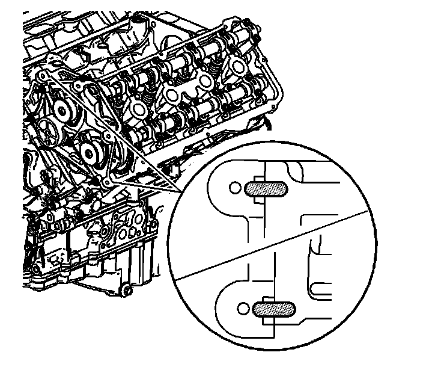
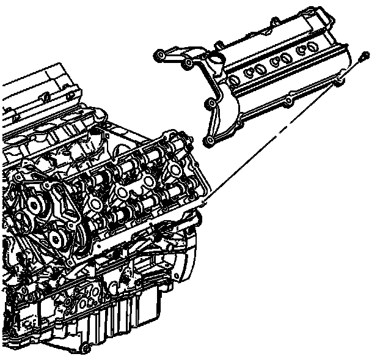

123. Camshaft Cover Installation - Left Side
Camshaft Cover Installation - Left Side
Tools Required
EN 46328 Camshaft Holding Tool

1. Remove the EN 46328 from the left camshafts.

2. Place a small amount of sealant GM P/N 12378521 (Canadian P/N 88901148) or equivalent at the split line of the left cylinder head and the left camshaft position actuator housings.

Important: Be careful to prevent the exposed section of the camshaft cover seal from being damaged by the edge of the cylinder head casting.
3. Install the left camshaft cover.
Notice: Refer to Fastener Notice (Fastener Notice) .
4. Install the left camshaft cover bolts.
Tighten the left camshaft cover bolts to 10 N.m (89 lb in).

5. Install the bolts connecting the left camshaft cover ground strap to the left cylinder head and the left camshaft cover.
* Tighten the left ground strap bolt into the camshaft cover to 10 N.m (89 lb in).
* Tighten the left ground strap bolt into the cylinder head to 25 N.m (18 lb ft).